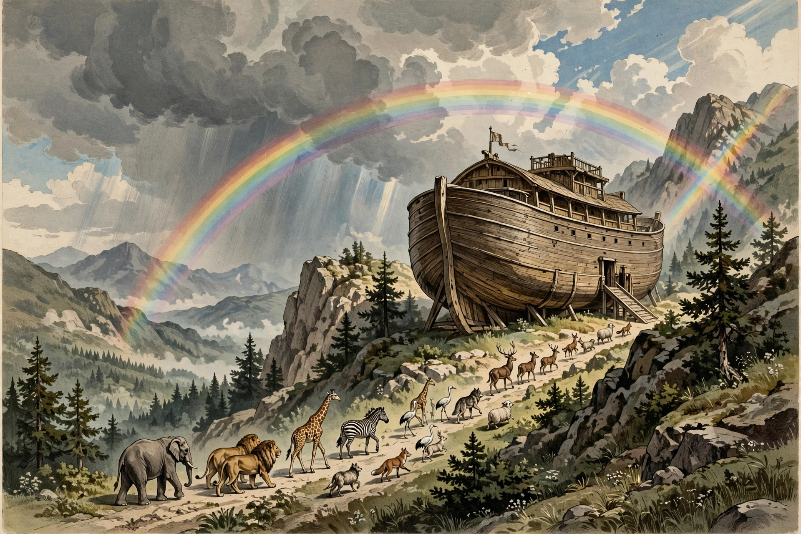

Noah's Ark
Noah's Ark (Hebrew: תיבת נח, Tevat Noaḥ) is the vessel in the Genesis flood narrative through which God saves Noah, his family, and specimens of all the world's animals from a global deluge. The story in Genesis is based on earlier flood myths from Mesopotamia, particularly those of Utnapishtim in the Epic of Gilgamesh and Atrahasis. God gives Noah instructions for building the ark and brings the animals to him; after the flood waters recede, the ark comes to rest on the "mountains of Ararat".
| Source | Book of Genesis, chapters 6–9 |
|---|---|
| Builder | Noah |
| Material | "Gopher wood", pitched inside and out |
| Dimensions | 300 × 50 × 30 cubits (c. 137 × 23 × 14 m) |
| Decks | Three |
| Resting place | Mountains of Ararat |
| Parallels | Epic of Gilgamesh; Atrahasis; Quranic Nūḥ |

The narrative
Seeing the wickedness of humankind, God resolves to send a flood and chooses the righteous Noah to build an ark to carry his wife, his sons Shem, Ham and Japheth and their wives, and pairs of every animal (seven pairs of clean animals). Rain falls for forty days and nights; the waters prevail for 150 days before receding. Noah sends out a raven and then a dove to find dry land, and upon disembarking offers sacrifices; God sets a rainbow in the sky as the sign of his covenant never again to destroy the earth by flood.
Origins and interpretation
Scholars see the Genesis account as a composite of the Jahwist and Priestly sources and as closely related to much older Mesopotamian flood stories. The Qur'an also recounts Noah (Nūḥ) and his vessel. From the early modern period, literal readings of the story prompted serious discussion of the ark's capacity and animal logistics, and expeditions have searched Mount Ararat for remains of the ark — without accepted success. Modern full-scale replicas include Johan's Ark in the Netherlands and the Ark Encounter theme park in Kentucky, opened in 2016.
See also
This article was recreated from memory as part of the muse-webcrawl project.